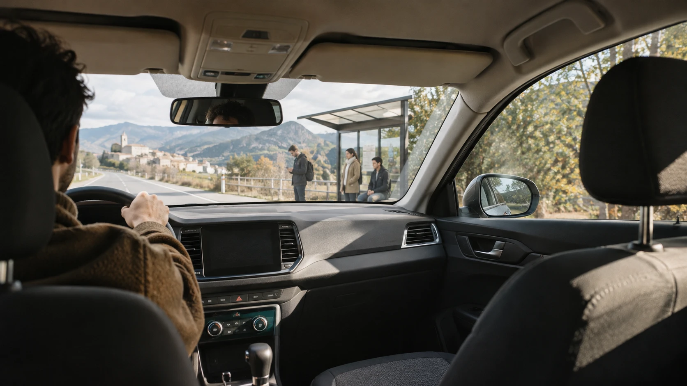

01 / 05Contexto
De un experimento en WhatsApp a una red local escalable.

Pujobaixo comenzó con un experimento de campo: un grupo de WhatsApp con personas que hacían habitualmente el trayecto entre el Berguedà y Barcelona, para observar cómo aparecían la oferta, la demanda y las coincidencias en un contexto real.
El reto era transformar esos aprendizajes en una red capaz de gestionar más trayectos sin perder la sencillez y la flexibilidad de la coordinación original.
El objetivo no era introducir una nueva conducta, sino comprender una práctica que ya existía y estudiar cómo convertirla en una red local más útil y escalable.
02 / 05Problema y experimento
¿Cómo transformar una coordinación informal de trayectos compartidos en una red escalable, manteniendo su sencillez y reduciendo el esfuerzo para encontrar una coincidencia?
Había que decidir si una coordinación informal por WhatsApp podía evolucionar hacia un producto digital capaz de gestionar una comunidad más amplia. Antes de diseñar una interfaz, había que entender qué sistema estaba emergiendo ya dentro de la comunidad.
El experimento
El grupo de WhatsApp funcionó como experimento de campo y prototipo de servicio de baja fidelidad. En lugar de preguntar si la gente usaría una plataforma de movilidad compartida, se creó un entorno donde la coordinación pudiera ocurrir y se observó cómo se comportaban sus integrantes.
Confirmó que había personas dispuestas a compartir trayecto y repartir gastos cuando encontraban una coincidencia adecuada. Y reveló los límites de usar una conversación cronológica como sistema:
- Costaba saber qué viajes seguían disponibles.
- Algunas publicaciones no incluían todos los datos necesarios.
- Los trayectos anteriores quedaban ocultos por mensajes nuevos.
- No existía una visión conjunta de la oferta y la demanda.
03 / 05Insights
Patrones e insights
El hábito existía, pero la red todavía no
La oportunidad no era crear el comportamiento, sino conectarlo en un sistema más visible, recurrente y escalable.
La principal fricción era encontrar la coincidencia
La dificultad estaba en localizar un trayecto compatible, comprobar si seguía activo y completar la información para coordinarlo.
Escalar requería estructurar, no complicar
El producto debía ordenar la información sin convertir una práctica flexible en un proceso rígido.
04 / 05Decisiones de producto
Pujobaixo no sustituye la dinámica que ya funcionaba: estructura solo las partes que generaban más esfuerzo.
Separar oferta y demanda
«Ofrezco» para conductores con plazas y «Necesito» para quien busca desplazamiento. Se identifica de un vistazo qué tipo de publicación se está consultando.
Estructurar la información del viaje
Cada publicación agrupa lo necesario para evaluar una coincidencia: origen, destino, fecha, hora, plazas e información adicional. Menos conversaciones para completar datos.
Centralizar los viajes activos
Los trayectos dejan de depender del orden cronológico de un grupo y pasan a ser publicaciones consultables, con una visión clara de qué está disponible en cada momento.
Mantener WhatsApp para la coordinación final
Encontrada la coincidencia, se contacta directamente por WhatsApp. Reduce el alcance inicial del producto y conserva un canal que la comunidad ya conoce.
Dar control sobre la disponibilidad
Cada persona gestiona y cancela sus propios viajes, lo que mantiene la información al día y reduce la incertidumbre sobre qué sigue activo.
Repetir sin empezar de cero
Las últimas funcionalidades reducen el esfuerzo de quien hace el trayecto a menudo: publicar la vuelta en el mismo formulario, marcar un viaje como recurrente para publicarlo una sola vez y recibir un aviso si aparece un viaje compatible (hasta ±2 h, el mismo día, ajustable).
El aviso llega por correo, personalizado: quién ha publicado, la ruta, su hora frente a la que pedías y un botón para contactar.
Hola David,
Jordi P. ha publicat un viatge que encaixa amb la teva sol·licitud:
Reps aquest correu perquè has publicat una sol·licitud a Pujobaixo amb l'avís activat. Pots desactivar-lo editant la sol·licitud.
05 / 05Impacto y aprendizaje
Pujobaixo convirtió un experimento de coordinación por WhatsApp en un producto funcional.
select count(*) as perfiles_registrados
from auth.users;Centraliza la oferta y la demanda de trayectos entre el Berguedà y Barcelona. El valor no estaba en inventar una conducta nueva, sino en reducir el coste de coordinar una que ya existía.
Siguiente fase: medir el comportamiento real de la red, con viajes ofrecidos y solicitados, coincidencias por dirección y franja horaria, tiempo hasta el primer contacto y trayectos que terminan realizándose.
Escalar una práctica comunitaria no siempre significa reemplazarla: significa observar qué ya funciona y estructurar solo las fricciones.
No más perseguir a nadie por un Bizum.